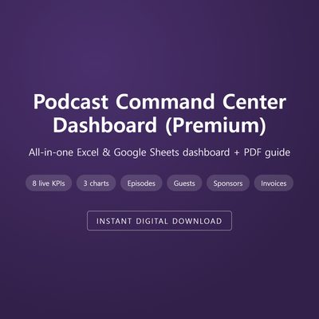
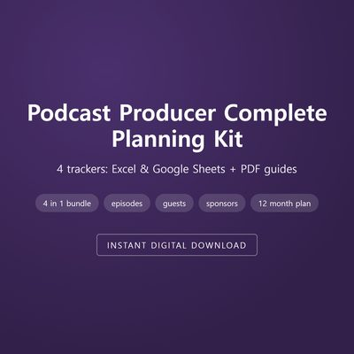
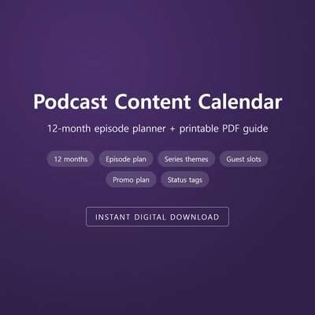
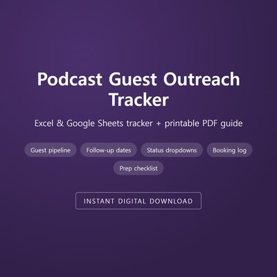
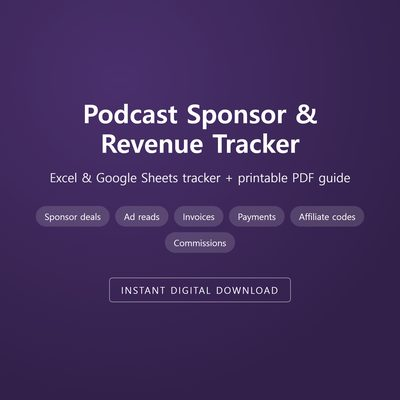
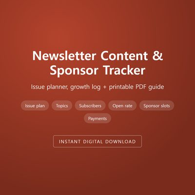
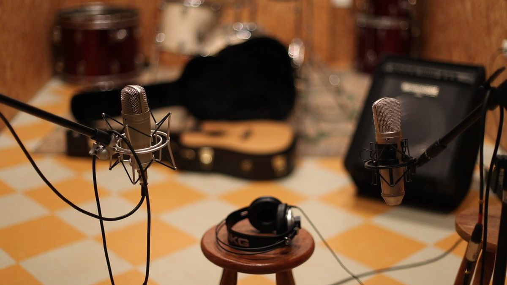
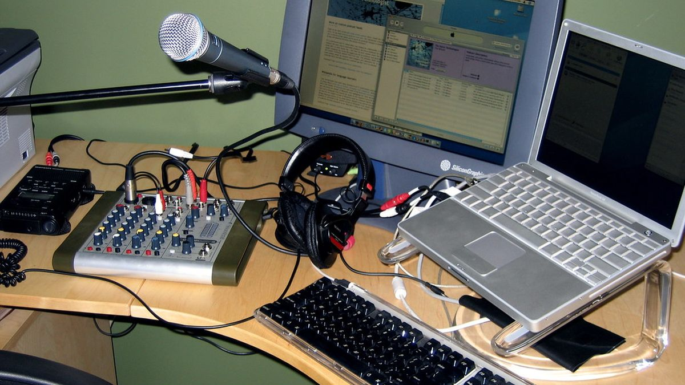
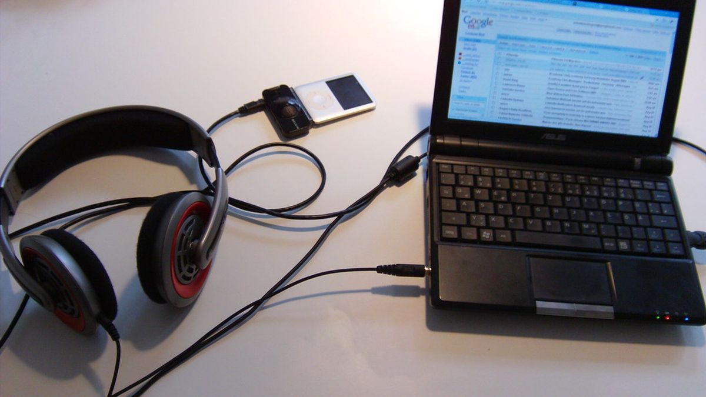
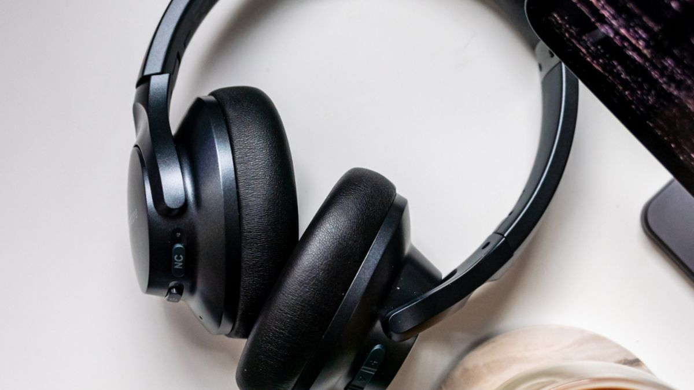

<!doctype html>
<html lang="en">
<head>
<script async src="https://pagead2.googlesyndication.com/pagead/js/adsbygoogle.js?client=ca-pub-7383810158576704" crossorigin="anonymous"></script>
<meta charset="utf-8">
<title>Podcast Episode & Production Management</title>
<meta name="viewport" content="width=device-width, initial-scale=1">
<meta name="description" content="Guides for organizing podcast production: episode checklists, guest coordination, recording-to-publish timelines, and sponsor tracking, plus a ready-made tracker.">
<link rel="canonical" href="https://ghengoy.github.io/podcast-producer-tracker/index.html">
<meta property="og:type" content="website">
<meta property="og:title" content="Podcast Episode &amp; Production Management">
<meta property="og:description" content="Guides for organizing podcast production: episode checklists, guest coordination, recording-to-publish timelines, and sponsor tracking, plus a ready-made tracker.">
<meta property="og:url" content="https://ghengoy.github.io/podcast-producer-tracker/index.html">
<meta property="og:image" content="https://ghengoy.github.io/podcast-producer-tracker/cover-600x600.png">
<meta name="p:domain_verify" content="ed2ca7fb71cecfffeba5d895002ee1d1"/>
<script data-goatcounter="https://ghengoy.goatcounter.com/count" async src="//gc.zgo.at/count.js"></script>
<style>
  :root { --accent: #4A306D; --accent-dark: #32204A; --tint: #F1ECF7; --ink: #1f2328; --muted: #5d6470;
          --line: #e4e1da; --paper: #fbfaf7; --card: #ffffff; }
  * { box-sizing: border-box; }
  body { margin: 0; background: var(--paper); color: var(--ink); font-family: -apple-system, BlinkMacSystemFont, "Segoe UI", Roboto, "Helvetica Neue", Arial, sans-serif;
         font-size: 18px; line-height: 1.75; -webkit-font-smoothing: antialiased; }
  a { color: var(--accent); text-underline-offset: 3px; }
  a:hover { color: var(--accent-dark); }
  img { max-width: 100%; height: auto; }
  .site-header { background: var(--card); border-bottom: 1px solid var(--line); }
  .site-header .inner { max-width: 760px; margin: 0 auto; padding: 14px 20px; display: flex; align-items: center; justify-content: space-between; gap: 16px; flex-wrap: wrap; }
  .brand { font-weight: 700; color: var(--ink); text-decoration: none; font-size: 17px; display: flex; align-items: center; gap: 10px; }
  .brand-mark { width: 28px; height: 28px; border-radius: 8px; background: var(--accent); display: inline-block; position: relative; }
  .brand-mark::after { content: ""; position: absolute; left: 7px; top: 8px; width: 14px; height: 3px; background: #fff; border-radius: 2px;
                       box-shadow: 0 5px 0 #fff, 0 10px 0 rgba(255,255,255,.6); }
  .site-header nav { display: flex; gap: 18px; font-size: 15px; }
  .site-header nav a { color: var(--muted); text-decoration: none; }
  .site-header nav a:hover { color: var(--accent); }
  main { max-width: 760px; margin: 0 auto; padding: 32px 20px 56px; }
  article > h1, main > h1 { font-size: clamp(30px, 5vw, 42px); line-height: 1.2; letter-spacing: -0.02em; margin: 8px 0 12px; }
  h2 { font-size: 27px; line-height: 1.3; letter-spacing: -0.01em; margin: 52px 0 14px; padding-top: 6px; scroll-margin-top: 16px; }
  h3 { font-size: 21px; line-height: 1.35; margin: 32px 0 8px; }
  p { margin: 0 0 20px; }
  ul, ol { padding-left: 1.3em; margin: 0 0 22px; }
  li { margin-bottom: 8px; }
  li::marker { color: var(--accent); }
  strong { font-weight: 650; }
  .pillar-link { font-size: 15px; margin: 0 0 4px; }
  .pillar-link a { text-decoration: none; }
  .post-meta { color: var(--muted); font-size: 15px; margin: 0 0 24px; }
  .post-hero { margin: 0 0 28px; }
  .post-hero img { width: 100%; aspect-ratio: 16 / 9; object-fit: cover; border-radius: 14px; display: block; background: var(--tint); }
  figcaption { font-size: 13px; color: var(--muted); margin-top: 8px; line-height: 1.5; }
  figcaption a { color: var(--muted); }
  .toc { background: var(--card); border: 1px solid var(--line); border-radius: 12px; padding: 18px 22px 8px; margin: 0 0 32px; font-size: 16px; }
  .toc-title { font-weight: 700; margin: 0 0 8px; font-size: 14px; letter-spacing: .06em; text-transform: uppercase; color: var(--muted); }
  .toc ol { margin: 0 0 10px; }
  .toc li { margin-bottom: 4px; }
  .toc a { text-decoration: none; }
  .key-takeaways, .callout { border-radius: 12px; padding: 20px 24px 6px; margin: 0 0 30px; }
  .key-takeaways { background: var(--tint); border-left: 5px solid var(--accent); }
  .key-takeaways ul { margin-bottom: 14px; }
  .box-title { font-weight: 700; margin: 0 0 8px; font-size: 14px; letter-spacing: .06em; text-transform: uppercase; color: var(--accent-dark); }
  .callout { background: var(--card); border: 1px solid var(--line); border-left: 5px solid var(--accent); }
  .callout.note { border-left-color: #b7791f; }
  .callout.note .box-title { color: #8a5a12; }
  .steps { list-style: none; counter-reset: step; padding-left: 0; }
  .steps > li { counter-increment: step; position: relative; padding-left: 52px; margin-bottom: 18px; }
  .steps > li::before { content: counter(step); position: absolute; left: 0; top: 0; width: 34px; height: 34px; border-radius: 50%;
                        background: var(--accent); color: #fff; font-weight: 700; font-size: 16px; display: flex; align-items: center; justify-content: center; }
  .table-wrap { overflow-x: auto; margin: 0 0 28px; border: 1px solid var(--line); border-radius: 12px; background: var(--card); }
  table { border-collapse: collapse; width: 100%; font-size: 16px; line-height: 1.5; }
  th, td { text-align: left; padding: 12px 16px; border-bottom: 1px solid var(--line); vertical-align: top; }
  th { background: var(--tint); color: var(--accent-dark); font-weight: 700; }
  tr:last-child td { border-bottom: 0; }
  .pin-figure { margin: 36px auto; max-width: 400px; text-align: center; }
  .pin-figure img { border-radius: 12px; box-shadow: 0 10px 30px rgba(0,0,0,.12); display: block; }
  blockquote { margin: 0 0 24px; padding: 4px 0 4px 20px; border-left: 3px solid var(--line); color: var(--muted); font-style: italic; }
  .post-cta { display: flex; gap: 24px; align-items: center; background: var(--card); border: 1px solid var(--line); border-top: 5px solid var(--accent);
              border-radius: 14px; padding: 24px; margin: 48px 0 8px; }
  .post-cta img { width: 150px; border-radius: 10px; flex-shrink: 0; }
  .post-cta h3 { margin: 2px 0 6px; }
  .post-cta p { margin-bottom: 12px; font-size: 16px; }
  .cta-kicker { font-size: 13px !important; letter-spacing: .06em; text-transform: uppercase; color: var(--muted); margin: 0 !important; }
  .buy-button { display: inline-block; background: var(--accent); color: #fff !important; padding: 12px 22px; border-radius: 10px; text-decoration: none; font-weight: 700; font-size: 16px; }
  .buy-button:hover { background: var(--accent-dark); }
  .product-box { background: var(--card); border: 1px solid var(--line); border-radius: 14px; padding: 24px; margin: 24px 0 36px; display: grid; grid-template-columns: 200px 1fr; gap: 0 24px; align-items: center; }
  .product-box img { width: 200px; border-radius: 10px; grid-row: span 3; }
  .product-box h3 { margin: 0 0 6px; }
  .product-box p { margin-bottom: 12px; font-size: 16px; }
  .product-grid { display: grid; grid-template-columns: repeat(auto-fill, minmax(160px, 1fr)); gap: 16px; margin: 12px 0 36px; }
  .product-card { display: flex; flex-direction: column; gap: 4px; background: var(--card); border: 1px solid var(--line); border-radius: 12px; padding: 12px; color: var(--ink); text-decoration: none; font-size: 15px; line-height: 1.4; }
  .product-card:hover { border-color: var(--accent); }
  .product-card img { width: 100%; border-radius: 8px; margin-bottom: 4px; }
  .product-card span { color: var(--muted); }
  .product-card .price { color: var(--accent); font-weight: 700; }
  .post-list { list-style: none; padding: 0; display: grid; gap: 16px; }
  .post-list li { margin: 0; }
  .post-card { display: flex; gap: 18px; background: var(--card); border: 1px solid var(--line); border-radius: 14px; overflow: hidden; color: var(--ink); text-decoration: none; }
  .post-card:hover { border-color: var(--accent); }
  .post-card img { width: 200px; object-fit: cover; flex-shrink: 0; background: var(--tint); }
  .post-card-text { display: flex; flex-direction: column; gap: 6px; padding: 16px 18px 16px 0; }
  .post-card-text strong { font-size: 19px; line-height: 1.35; }
  .post-card-desc { color: var(--muted); font-size: 15px; line-height: 1.55; }
  .post-card-date { color: var(--muted); font-size: 13px; }
  .site-footer { border-top: 1px solid var(--line); background: var(--card); color: var(--muted); font-size: 15px; }
  .site-footer .inner { max-width: 760px; margin: 0 auto; padding: 28px 20px; display: flex; justify-content: space-between; gap: 16px; flex-wrap: wrap; }
  .site-footer p { margin: 0; }
  @media (max-width: 600px) {
    body { font-size: 17px; }
    h2 { font-size: 23px; margin-top: 40px; }
    .post-cta, .post-card { flex-direction: column; }
    .post-cta img { width: 120px; }
    .post-card img { width: 100%; aspect-ratio: 16 / 9; }
    .post-card-text { padding: 0 16p
<header class="site-header"><div class="inner">
<a class="brand" href="index.html"><span class="brand-mark" aria-hidden="true"></span>Podcast Production</a>
<nav><a href="index.html">Guides</a><a href="pillar-guide.html">Start here</a></nav>
</div></header>
<main>
<article>
<h1>Podcast Episode & Production Management</h1>
<h2>Stop losing track of your podcast production</h2>
<p>A simple system for planning episodes, coordinating guests, and keeping sponsor details straight — so nothing slips through the cracks.</p>
<div class="product-box">

<h3>Podcast Producer & Episode Management Tracker — $19.99</h3>
<p>A ready-to-use spreadsheet and guide for tracking episodes from idea to publish.</p>
<p><a class="buy-button" href="https://kimnet8.gumroad.com/l/eagpjf">Get the Tracker</a></p>
</div>
<section class="more-products">
<h3>More podcast planning tools</h3>
<div class="product-grid">
<a class="product-card" href="https://kimnet8.gumroad.com/l/ycqngv"><strong>Podcast Command Center Dashboard (Premium)</strong><span>All-in-one Excel &amp; Google Sheets dashboard + PDF guide</span><span class="price">$34.99</span></a>
<a class="product-card" href="https://kimnet8.gumroad.com/l/sztjbn"><strong>Podcast Producer Complete Planning Kit</strong><span>4 trackers: Excel &amp; Google Sheets + PDF guides</span><span class="price">$29.99</span></a>
<a class="product-card" href="https://kimnet8.gumroad.com/l/qyiqx"><strong>Podcast Content Calendar</strong><span>12-month episode planner + printable PDF guide</span><span class="price">$9.99</span></a>
<a class="product-card" href="https://kimnet8.gumroad.com/l/xqtwt"><strong>Podcast Guest Outreach Tracker</strong><span>Excel &amp; Google Sheets tracker + printable PDF guide</span><span class="price">$8.99</span></a>
<a class="product-card" href="https://kimnet8.gumroad.com/l/bsqxojt"><strong>Podcast Sponsor &amp; Revenue Tracker</strong><span>Excel &amp; Google Sheets tracker + printable PDF guide</span><span class="price">$8.99</span></a>
</div>
<h3>Also making videos or a newsletter?</h3>
<div class="product-grid">
<a class="product-card" href="https://kimnet8.gumroad.com/l/gledqb"><strong>Newsletter Content &amp; Sponsor Tracker</strong><span>Issue planner, growth log + printable PDF guide</span><span class="price">$8.99</span></a>
<a class="product-card" href="https://kimnet8.gumroad.com/l/xpjxd"><strong>YouTube Content Planner</strong><span>Idea-to-published video tracker + printable PDF guide</span><span class="price">$9.99</span></a>
<a class="product-card" href="https://kimnet8.gumroad.com/l/xrffrh"><strong>Creator Weekly Content Planner</strong><span>One-page weekly planner for YouTubers and writers</span><span class="price">$5.99</span></a>
</div>
</section>
<h3>Latest Posts</h3>
<ul class="post-list">
<li><a class="post-card" href="how-many-episodes-should-you-record-ahead.html"><span class="post-card-text"><strong>How Many Episodes Should You Record Ahead? Building a Podcast Buffer</strong><span class="post-card-desc">A practical answer to how many podcast episodes you should keep recorded and ready to publish, plus how to build and maintain that buffer without stalling.</span><span class="post-card-date">October 21, 2026</span></span></a></li>
<li><a class="post-card" href="how-often-should-you-publish-a-podcast.html"><span class="post-card-text"><strong>How Often Should You Publish a Podcast? Finding a Sustainable Release Schedule</strong><span class="post-card-desc">Weekly, biweekly, or monthly? A practical framework for choosing a podcast release schedule you can actually sustain long-term.</span><span class="post-card-date">October 14, 2026</span></span></a></li>
<li><a class="post-card" href="podcast-episode-checklist.html"><span class="post-card-text"><strong>The Complete Podcast Episode Checklist: Idea to Publish</strong><span class="post-card-desc">A complete podcast episode checklist from idea to publish, covering pre-production, recording, editing, publishing, and post-release follow-up.</span><span class="post-card-date">September 7, 2026</span></span></a></li>
<li><a class="post-card" href="podcast-production-essentials.html"><span class="post-card-text"><strong>Podcast Production Essentials: Tools That Keep Your Operation Organized</strong><span class="post-card-desc">Tools and workspace essentials that keep a podcast operation organized, from planning and scheduling to managing episodes and sponsors.</span><span class="post-card-date">August 26, 2026</span></span></a></li>
<li><a class="post-card" href="pillar-guide.html"><span class="post-card-text"><strong>The Complete Guide to Podcast Episode & Production Management</strong><span class="post-card-desc">The complete guide to podcast episode and production management: planning, guest scheduling, recording, editing, publishing, and sponsor tracking.</span><span class="post-card-date">August 24, 2026</span></span></a></li>
<li><a class="post-card" href="why-episode-tracking-matters.html"><span class="post-card-text"><strong>Why Episode Tracking Matters: The Real Cost of Disorganized Podcast Production</strong><span class="post-card-desc">The real cost of disorganized podcast production, from missed guest follow-ups to lost sponsor revenue, and why episode tracking fixes it.</span><span class="post-card-date">August 21, 2026</span></span></a></li>
<li><a class="post-card" href="guest-coordination-workflow.html"><span class="post-card-text"><strong>Building a Guest Coordination Workflow: From Outreach to Recording</strong><span class="post-card-desc">A step-by-step podcast guest workflow from first outreach to recording day: scheduling, prep materials, follow-ups, and what to track at each stage.</span><span class="post-card-date">August 19, 2026</span></span></a></li>
<li><a class="post-card" href="production-timeline-from-recording-to-publish.html"><span class="post-card-text"><strong>Production Timeline: Managing Recording, Editing, and Publishing Dates</strong><span class="post-card-desc">Manage every podcast deadline from recording through editing, show notes, and publishing, and keep a realistic production timeline.</span><span class="post-card-date">August 17, 2026</span></span></a></li>
<li><a class="post-card" href="how-to-use-the-tracker.html"><span class="post-card-text"><strong>How to Use the Podcast Tracker: A Walkthrough of Columns and Daily Workflows</strong><span class="post-card-desc">A walkthrough of the Podcast Producer &amp; Episode Management Tracker&#x27;s columns and the daily workflows that keep every episode on track.</span><span class="post-card-date">August 15, 2026</span></span></a></li>
<li><a class="post-card" href="sponsorship-and-affiliate-tracking.html"><span class="post-card-text"><strong>Sponsorship and Affiliate Link Tracking: Never Lose Revenue Again</strong><span class="post-card-desc">Track podcast sponsorship spots and affiliate links per episode so you never miss a read, a deliverable, or a payment.</span><span class="post-card-date">August 13, 2026</span></span></a></li>
<li><a class="post-card" href="managing-multiple-shows.html"><span class="post-card-text"><strong>Managing Multiple Podcast Shows Without Burning Out</strong><span class="post-card-desc">How to run two or more podcasts without burning out: systems for tracking episodes, deadlines, and guests across multiple shows.</span><span class="post-card-date">August 11, 2026</span></span></a></li>
<li><a class="post-card" href="episode-tracking-faq.html"><span class="post-card-text"><strong>Episode Tracking FAQ: Your Questions Answered</strong><span class="post-card-desc">Answers to the questions podcasters ask most about organizing a show: what to track per episode, how to handle guests, and keeping deadlines on schedule.</span><span class="post-card-date">August 9, 2026</span></span></a></li>
</ul>
</article>
</main>
<footer class="site-footer"><div class="inner">
<p><a href="https://podcast-producer-tracker.beehiiv.com/subscribe">Get an email when new guides go live</a></p>
<p>&copy; 2026 <a href="/">SimpleTrackers</a> &middot; <a href="/about.html">About</a> &middot; <a href="/contact.html">Contact</a> &middot; <a href="/privacy.html">Privacy</a></p>
</div></footer>tps://podcast-producer-tracker.beehiiv.com/subscribe">Get an email when new guides go live</a></p>
<p>&copy; 2026 SimpleTrackers</p>
</div></footer>
</body>
</html>
